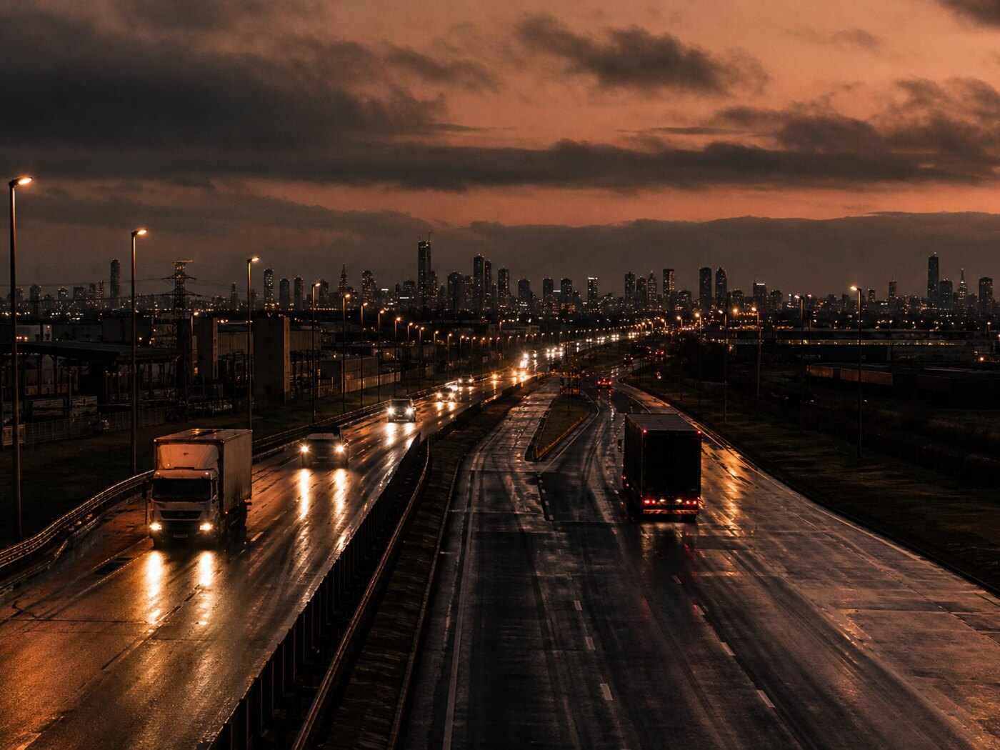

Flete de larga distancia · Formosa · Buenos Aires · Salta
Tres tramos.
Un recorrido.
Salgo de Formosa Capital a Buenos Aires, de ahí a Salta, y de Salta de vuelta a Formosa. El flete se coordina por WhatsApp.
01 / El servicio
Flete de larga distancia,
en un triángulo claro.
Victor Alcaraz cubre Formosa Capital, Buenos Aires y Salta. Cada tramo se consulta por separado, según de dónde sale la carga y a dónde tiene que llegar.
02 / Formosa Capital
Salida desde Formosa.
El recorrido empieza en Formosa Capital rumbo a Buenos Aires. Si la carga sale de acá, este es el tramo para consultar.
Consultar Formosa
03 / Buenos Aires
De Buenos Aires
a Salta.
Desde Buenos Aires el siguiente tramo es Salta. Un flete de larga distancia, en el medio del recorrido.
Consultar Buenos Aires04 / Salta
De Salta a Formosa.
El regreso cierra el triángulo: Salta a Formosa. Si la carga va para el norte, este es el tramo.
Consultar Salta05 / Cómo coordinar
Un tramo.
Un mensaje.
-
01
Decís el recorrido
Formosa, Buenos Aires o Salta. De dónde sale la carga y a dónde tiene que llegar.
-
02
Coordinamos el flete
Escribís por WhatsApp y vemos si ese tramo entra en el recorrido.
-
03
Seguimos en un solo chat
La atención queda en WhatsApp, sin formularios ni vueltas.
06 / Contacto
Decinos de dónde
sale la carga.
Un mensaje alcanza para empezar. Formosa Capital, Buenos Aires o Salta.
Hablar por WhatsApp ↗